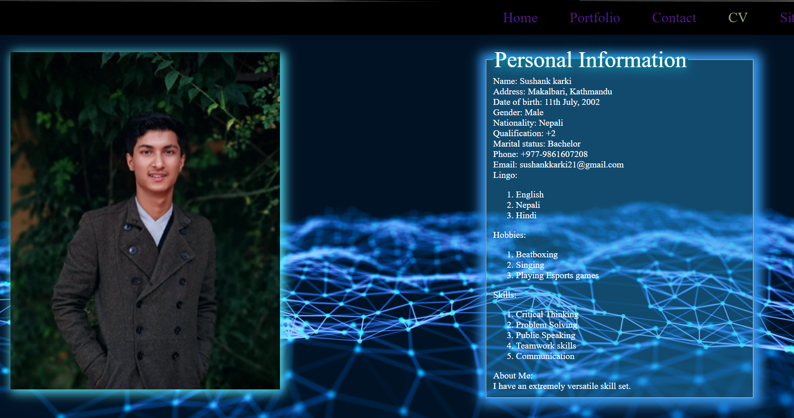
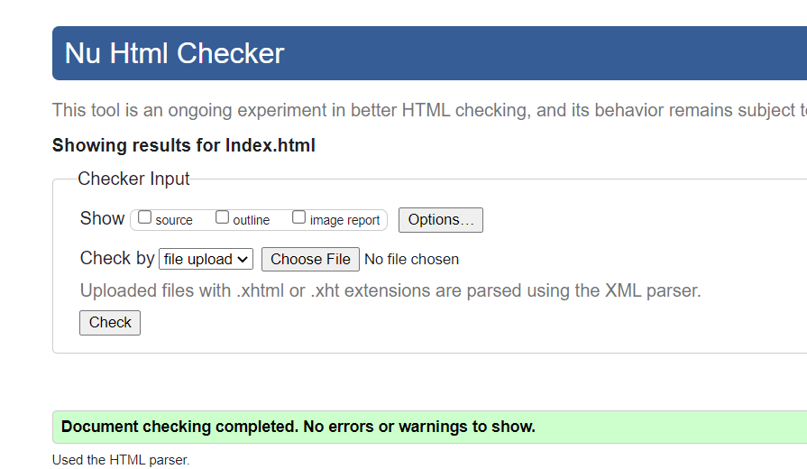
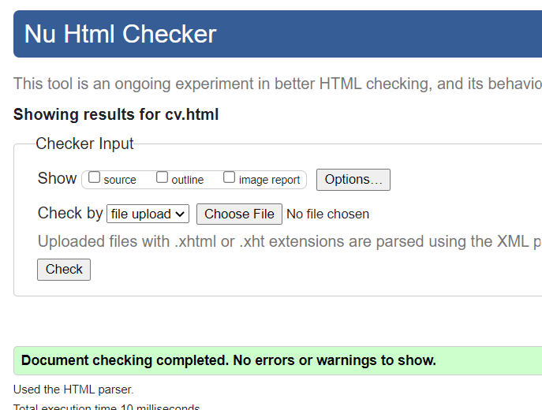
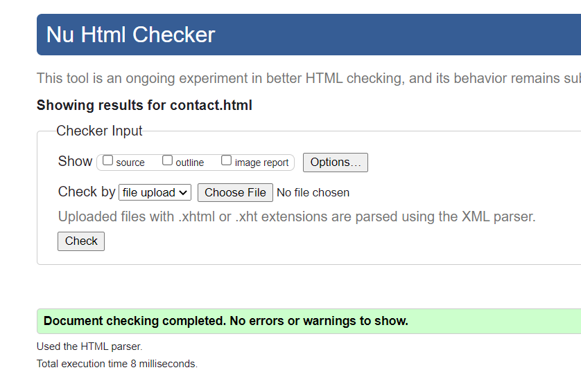
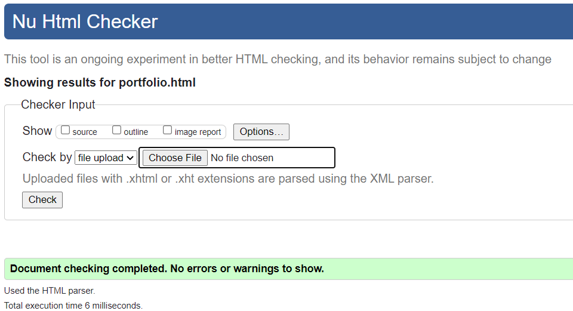
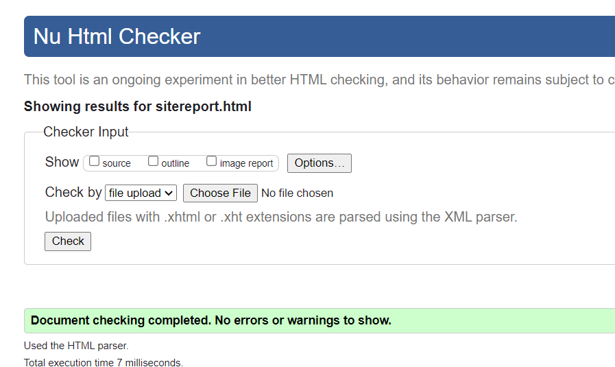
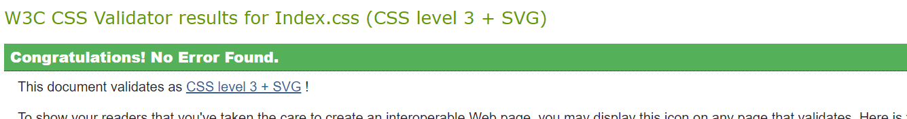

Objective
- The motivation behind this task is to evaluate my capacity to make a site page utilizing HTML and CSS.
- Dealing with my code utilizing GitHub.
- Here my task is to promote a portfolio with, in any case, five pages.
- I am assigned to give reference if I have learnt something externally.
Updated Dates
- Mar 13,2021(contact.html)
- Mar 15,2021(contact.html/
cv.html/index.html)
- Mar 17,2021(cv.html/contact.html/
index.html/img)
- Mar 18,2021(cv.html/contact.html/
index.html/img)
- Mar 22,2021(cv.html/contact.html/
index.html/index.css/portfolio.html/
sitereport.html/img)
- Mar 23,2021(cv.html/contact.html/
index.html/index.css/portfolio.html/
sitereport.html/img)
- Mar 27,2021(cv.html/contact.html/
index.html/index.css/portfolio.html/
sitereport.html/img)
- Mar 27,2021(cv.html/contact.html/
index.html/index.css/portfolio.html/
sitereport.html/img)
Experience
I was interested in coding from a small age and I found this more interesting. I've tried to apply as many codes as I can apply. These are some different pages where various designs are applied to make a page. I've learnt many things from this assignment. Now, I have learnt to use these codes very clearly. I think if I can use these codes daily then it may help me for further upcoming complex codes/languages.
Talking about my experience while doing this assignment from the very beginning it was very hard for me to understand the assignment. I was confused about what needs to be done and what must not be done. There were a lot of problems while creating the website. I didn’t have any clear concept about the way I wanted to design the site. The coding was difficult as I didn’t know how to use them correctly. The page was not what I expected it to be. The photo would either overlap or not stay in the desired location . While creating the website I learned a lot about the problems that may occur in the process of building a website such as margin problems, padding and choosing the wrong display . Making the hamburger icon work didn’t go as planned because the menu it was supposed to show didn’t work. As I solved a problem another would arise making it difficult to maintain balance.
There arose a lot of problems while putting together the website but it helped me with learning more about the things we were taught in class. I gained an understanding of using comments while coding. I also learned how to use Github and repositories throughout this process. I got the hang of using specific tags and how they differ in response to the code assembled.
References
- https://emerging-europe.com/news/
digitisation-is-cees-next-driver-of-sustained-growth/attachment/
abstract-technology-background-network-connection-structure-sc/
(November 13, 2018/1 Min Read/Craig Turp-Balazs) (Background-color of all pages)
- https://codepen.io/erikterwan/
pen/EVzeRP (Erik Terwan) (took concept of Hamburger and kept in responsive)
- https://genesisairway.com/
obturating-introducer-for-nasal-endotracheal-tubes/
no-image/(Genesis Airway Innovations)(This image is
kept is portfolio and will be changed after getting achievement)
- https://www.artstation.com/artwork/
OygVBK (sam bagherian / 2 years ago)(This is
background of responsive for all page)
- https://www.template.net/editable/
2393/animator-cv(took concept of CV and kept in CV page)
My Success

Validator





